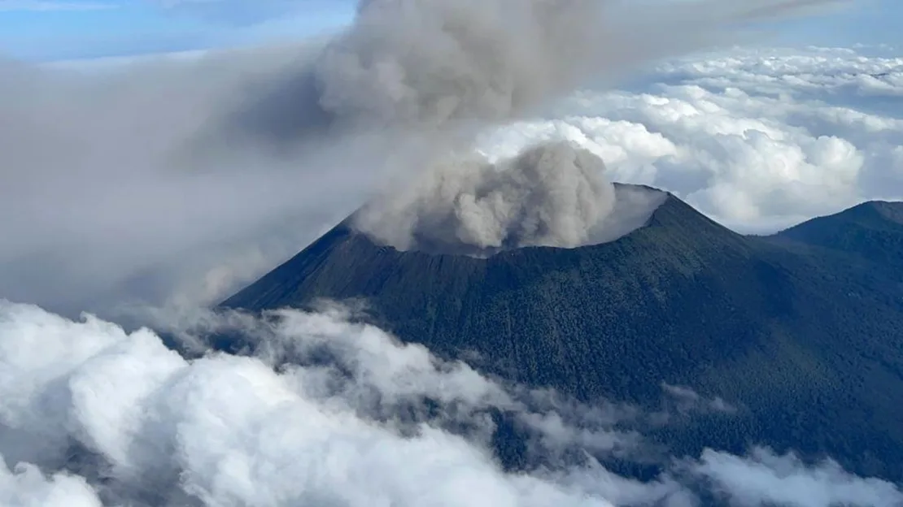

Democratic Republic of Congo

Nyiragongo, Democratic Republic of Congo - Credit: Fabien Muhire/CNN
Nyiragongo Volcano
Located on the eastern border of the Democratic Republic of Congo, Nyiragongo is the largest persistent lava lake in the world. It's terraced inner caldera walls are like steps that lead to the viewing portal of Earth's interior.
The volcano's volatility makes it particularly dangerous. Standing at the shores of this lava lake is not for the faint of heart. Material that rises and catapults itself from the surface does so at roughly 1200 degrees Celsius. A special heat suit is required to withstand the environment at its shores. Very few dare to venture into this realm.